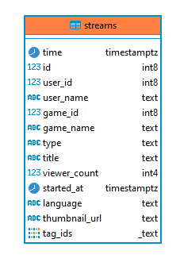
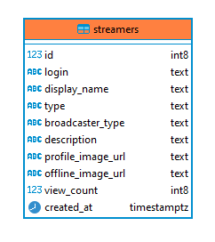
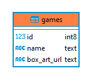

ACERCA DE
¿Qué es esto?
Tal y como se explica en el HOME, esta web app es el proyecto de fin de grado de ingeniería informática en la UNED de Israel Palma Sebastià.
Este proyecto ha consistido en la creación de un portal de estádisticas de la plataforma de streaming Twitch.
Para lograr el correcto funcionamiento de este proyecto se ha pasado por todas las fases de desarrollo del backend y del frontend, tal y como explicaré a continuación.
La API de Twitch
Twitch ofrece los datos de su plataforma mediante una API.
Twitch está bastante comprometido con el desarrollo de distinas apps y bots para su plataforma, y es por ello que pone al alcance de los desarrolladores muchas
herramientas y contenido, logrando así una amplia comunidad de desarrolladores.
Algo que hay que tener en cuenta para nuestro proyecto es que los datos de Twitch no son persistentes. La API nos ofrece instáneas del estado actual en el momento
en que se le hace la petición.
Por ejemplo, si quiero saber en este mismo instante cuanta gente hay viendo un streaming determinando, simplemente le tengo que hacer la petición a la API, en cambio,
si en un futuro quiero conocer estos mismos datos, los tendré que almacenar. No se le puede hacer una petición a la API de Twitch sobre información en el pasado.
Almacenando los datos de Twitch
Se han usado algunos scripts en Python para autenticarnos en la API de Twitch, hacerle peticiones y almacenar los datos en la base de datos.

La BBDD
Para elegir nuestra base de datos tenemos que tener en cuenta que una de las características importantes en nuestros datos es el tiempo.
Estamos ante un caso de time series. Existen varias opciones para abordar un proyecto de time series y he elegido una de las opciones mejor valoradas y
con la que más familiarizado estoy: PostgreSQL con el plugin TimeScaleDB.


BBDD - definición
La base de datos cuenta de 3 tablas: streams, streamers y juegos.
A continuación, se comparte una descripción gráfica de cada una de las tablas:
  La API
La API es el componente del proyecto que se encarga de hacer consultar a la base de datos, tratar la información y servirla para ser usada en la web.
La API se ha implementado con JavaScript y nodejs.

Peticiones a la API
Mediante las peticiones GET a la API se obtiene la información deseada de la base de datos, que puede ser usada en la web.
A continuación, se describen las distintas rutas de peticiones:
/api/filtrar/:user/:game/:language/:rango
Dado un usuario, un juego, un lenguaje y/o un rango de tiempo, se devuelve el id de los usuarios que cumplan esos requisitos.
/api/game/:game
Dado un juego, se devuelve la información de ese juego.
/api/game/:game/:rango/streamers
Dado un juego y un rango de tiempo, se devuelve el top streamers para esos parámetros.
/api/game/:game/:rango/languages
Dado un juego y un idioma, se devuelve el top streamers para esos parámetros.
/api/games/now
Devuelve la información de los juegos en la última hora.
/api/games/one
Devuelve la información de los juegos en el último día.
/api/games/seven
Devuelve la información de los juegos en la última semana.
/api/games/thirty
Devuelve la información de los juegos en el último mes.
/api/games/all
Devuelve toda la información de los juegos.
/api/games
Devuelve una lista de los juegos en la base de datos.
/api/language/:language/:rango/streamers
Dado un idioma y un rango de tiempo, se devuelve el top streamers para esos parámetros.
/api/language/:language/:rango/games
Dado un idioma y un rango de tiempo, se devuelve el top juegos para esos parámetros.
/api/languages/now
Devuelve la información de los idiomas en la última hora.
/api/languages/one
Devuelve la información de los idiomas en el último día.
/api/languages/seven
Devuelve la información de los idiomas en la última semana.
/api/languages/thirty
Devuelve la información de los idiomas en el último mes.
/api/languages/all
Devuelve toda la información de los idiomas.
/api/languages
Devuelve una lista de los idiomas en la base de datos.
/api/streamer/:user/now
Devuelve los streams de un streamer en la última hora.
/api/streamer/:user/one
Devuelve los streams de un streamer en el último día.
/api/streamer/:user/seven
Devuelve los streams de un streamer en la última semana.
/api/streamer/:user/thirty
Devuelve los streams de un streamer en la último mes.
/api/streamer/:user/all
Devuelve todos los streams de un streamer.
/api/streamers/now
Devuelve los streamers más vistos en la última hora.
/api/streamers/one
Devuelve los streamers más vistos en el último día.
/api/streamers/seven
Devuelve los streamers más vistos en la última semana.
/api/streamers/thirty
Devuelve los streamers más vistos en el último mes.
/api/streamers/all
Devuelve los streamers más vistos en total.
/api/streamers
Devuelve una lista de todos los streamers.
Portal web
Se ha creado este portal web para la visualización de la información.
La implementación de este portal web se ha realizado de forma general en HTML, CSS y JavaScript.
La creación de las gráficas se ha realizado mediante la librería de JavaScript d3.js.

Descargar el proyecto
Para la entrega de este Proyecto de Fin de Grado, se ha adjutando también una memoria que describe en
el desarrollo del mismo. Proximamente se publicará en este mismo lugar tanto la memoria como el proyecto.